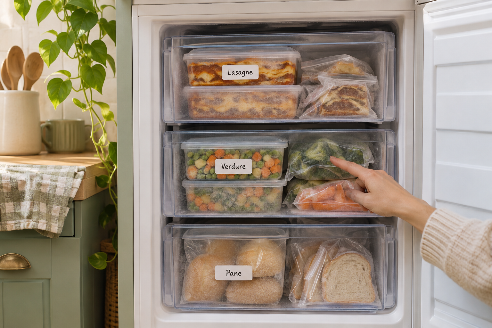

← Tutti i consigli per la casa
Come organizzare il congelatore e ritrovare le porzioni

Eva
Dare un posto alle scorte e un nome chiaro alle preparazioni di casa.

«C’è una porzione di lasagne… ma dove?»
«Se per trovare la cena devo spostare mezzo congelatore, qualcosa va sistemato! Io comincerei dai posti, prima ancora che dai prodotti.»
Un nome per ogni cassetto.
Puoi chiamarli semplicemente «Congelatore, cassetto alto», «cassetto centrale» e «cassetto basso». Scegli nomi facili da ricordare e usali con regolarità. L’importante è che chi vive con te capisca dove cercare.
Una confezione misteriosa? Diamole un’identità.
Sull’etichetta del contenitore scrivi cosa contiene e quando l’hai preparato e congelato. «Lasagne, due porzioni» aiuta più di «avanzi». Le indicazioni scritte sul contenitore restano utili anche quando non hai il telefono in mano.
La stessa organizzazione nell’app.
In EatMeFirst puoi inserire una preparazione senza codice a barre: scrivi il nome, indica le porzioni e scegli l’ubicazione. Nelle note puoi aggiungere la data di preparazione, quella di congelamento e altre indicazioni utili. Quando prendi una porzione, registri il consumo nello Scarico.
Prima di comprare, una controllata.
Apri l’Inventario e filtra per il cassetto che ti interessa. Se sposti fisicamente una confezione, aggiorna anche il posto nell’app: altrimenti lei continuerà a cercarla dove l’avevi lasciata!
«E se Max cambia tutto di posto, almeno che me lo dica. Il congelatore non è una caccia al tesoro!»
Questi sono consigli per fare ordine. Per sapere se e come congelare un alimento, per quanto conservarlo e come scongelarlo, segui le indicazioni del produttore e le fonti ufficiali sulla sicurezza alimentare. L’app non stabilisce che un alimento sia sicuro.
Ti va di scoprire EatMeFirst?
Max, Eva e Leo ti raccontano le funzioni dell’app, con esempi e parole semplici.